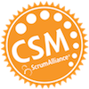

Education
- Doctor of Psychology, University of La Verne, CA - 2007
- Master of Science, Psychology, University of La Verne, CA - 2004
- Master of Arts, Education, Azusa Pacific University, CA - 2001
- Bachelor of Arts, Theater Arts, Bates College, Lewiston, ME - 1996

I also became a Certified ScrumMaster (CSM) in December 2015.